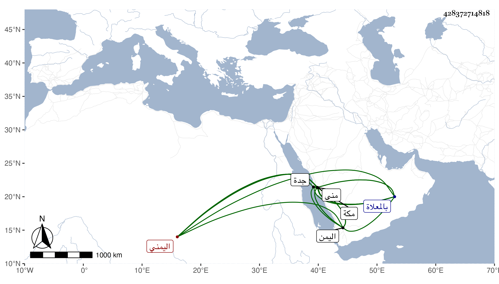

0902Sakhawi.DawLamic.ITO20230111-ara1.EIS1600.428372714818
Biography ID: 428372714818
505
محمد بن جابر بن عبد الله اليمني نزيل مكة ويعرف بالحراشي الماضي أبوه . سكن مكة حين كان أبوه أمير جدة ثم دخل بعد بمدة اليمن فأكرمه صاحبها ووقع بينه وبين أهل الشرجة منها فتنة قتل فيها بعضهم ثم استدعى به أبوه إلى مكة بعد أن لايم صاحبها فوصلها في موسم سنة ست عشرة وثمانمائة فلم يلبث أن قبض عليهما بمنى وشنقا بعد المغرب من ليلة نصف ذي الحجة منها فهذا بباب شبيكة وأبوه بباب المعلاة بل قيل إن هذا فاضت روحه قبل شنقه من الخوف وقبر بالمعلاة وسنة ثلاثون ظنا ويقال إن صاحب اليمن قال له حين استأذنه في الرجوع لمكة إنكما تشنقان أو تكحلان أو كما قال ، ذكره الفاسي في مكة وكذا المقريزي في عقوده باختصار .
